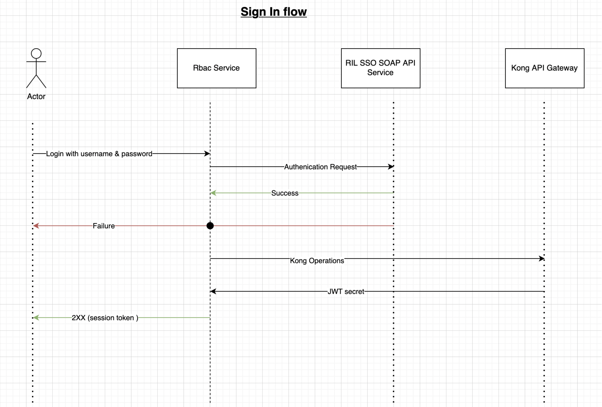
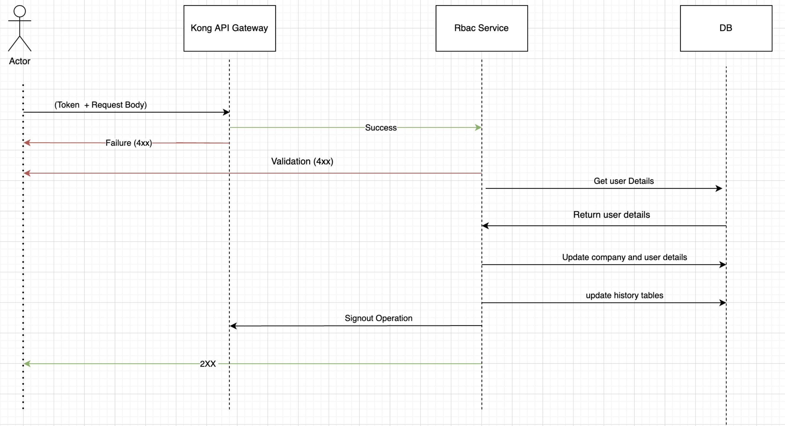
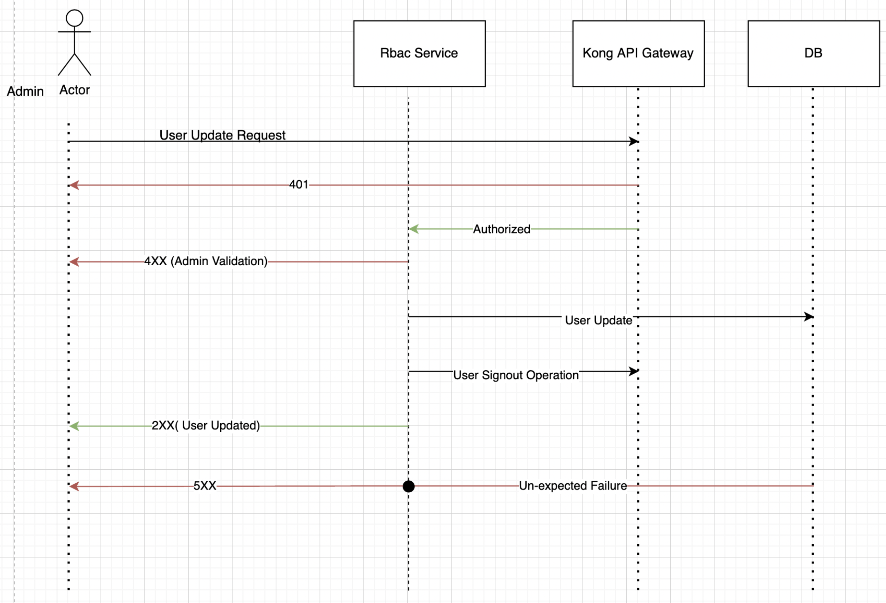
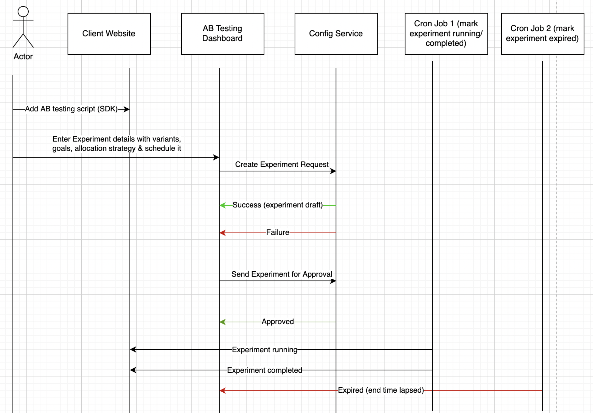

A/B Testing System Design
- Manage
- Copy
- Move / Rename
 Delete
Delete- Actions
- Export
- Print preview
- View Source
- Share by email
- Viewers
- Children
- Comments
- Annotations
- Attachments (25)
- History
- Information
- Summary
- Prerequisite
- Glossary
- Requirements
- Phasing
- Challenges and Assumptions
- Constraints
- Design
- Other Documents
- Security
- Launch Plan
Summary
A/B testing is a technique used in web development and marketing to compare two or more versions of a webpage or product to determine which one performs better. It allows individuals, teams and companies to make careful changes to their user experiences while collecting data on the impact it makes. This allows them to construct hypotheses and to learn what elements and optimizations of their experiences impact user behavior the most.
This document describes the high-level design of an A/B testing system that allows users to create and manage experiments, define variations, set goals, and measure the success of the experiment based on the events capture according to the end user behaviour.
Prerequisite
Read about Redis, Kafka, PostgresSql and kong
Glossary
CAP→ consistency, Availability, Partition Tolerance
k8's → Kubernetes
Experiment → two different variations of the same product or content are presented to users.
End-user:- customer or the user on the Website/App for which we have to monitor the behavior.
Admin/users:- Users of the Website/App/Services who manages it like PM, Developer, QA etc.
evpn: - vpn for the JIO users to access the JIO private network.
JWT:- JWT stands for JSON Web Token. It is a standard format for representing and transmitting data securely between two parties
Requirements
Functional
User management: The ability to manage users and their roles within the system, including administrators, users, and viewers.
Experiment setup: The ability to set up and configure AB Experiments, including selecting the variations to test, defining the metrics/goals to track, and specifying the duration and audience for the test.
Randomization: The ability to randomly assign users to either the control group or the test group, ensuring that the test results are not biased.
User Segmentation: The ability to filter out the target users based on some rules or the percent of users who can be part of the experiment instead of 100% user.
Data collection: The ability to collect and store data on user behaviour and preferences, including page views, clicks, conversions, and other relevant metrics.
Statistical analysis: The ability to evalute the data collected from the test to determine whether there is a statistically significant difference between the control and test groups, and to calculate the level of confidence in the results.
Reporting: The ability to generate reports that provide insights into the test results and highlight the key findings, including graphs, charts, and tables.
Visual Editor:- There should be some UI where user can modify the components of UI for variants in frontend type of experiments.
SDK Integration: The ability to integrate with other systems, such as web analytics tools, marketing automation platforms, and customer relationship management (CRM) systems, to provide a holistic view of user behaviour and preferences using SDK's.
Management dashboard: The ability to provide a management dashboard that allows stakeholders to view test results and track the progress of ongoing tests.
Notifications: provide an ability to opt-in/opt-out the notifications related to the experiments and its operations.
Timeline Management:- an ability to track experiment changes made by users visible in timeline.
Non-Functional
Performance: The system should be able to handle a large number of concurrent users and requests without slowing down or crashing.
Reliability: The system should be reliable and available at all times. It should be able to handle failures gracefully, and have mechanisms in place to recover quickly from any errors.
Security: The system should be secure and protect user data and sensitive information. It should have measures in place to prevent un-authorized access, data breaches, and other security threats.
Scalability: The system should be able to scale up or down as needed to accommodate changes in demand or usage patterns. It should be able to handle an increasing number of users or requests without compromising performance or functionality.
Usability: The system should be easy to use and navigate. It should be intuitive and user-friendly, with clear instructions and documentation.
Compatibility: The system should be compatible with different operating systems, browsers, and devices. It should be able to work seamlessly with different software and hardware configurations.
Maintainability: The system should be easy to maintain and update. It should have a modular architecture and well-documented code to facilitate maintenance and future enhancements.
Accessibility: The system should be accessible to users with disabilities. It should meet accessibility standards and guidelines, such as the Web Content Accessibility Guidelines (WCAG).
Archival: There should some archival policy to push data to some other storage for visualization after 3 months retention period to reduce data in our active data servers.
Monitoring and Alerting:- There should have some Notification and ELK system to analyse for production logging and Error Alerts.
Phasing
P0:
Access:- the product should have been made accessible to the users having specific role, permissions and separation at the company level.
Visual Editor:- provided a UI editor for creating variant for frontend experiments.
App Support:- provided support for web-apps, progressive mobile apps and hybrid apps as well.
User Targeting:- configurable rule-engine for user targeting based on default and custom attributes.
Variant :- the different versions or variations of a particular element or feature being tested in an A/B experiment.
Goal:- Goal definition while creating variant to describe what type of metrics and element want to target for analysis ..
Admin Approval:- Scheduling experiments or users who can have access to the product for its company given only after the approval of admin.
Internal Users:- ensuring accessibility for both internal users (User and Admin) and allowing access to the dashboard using Single Sign-On (SSO) authentication.
Experiment Owner:- implemented restrictions on experiment modification by assigning ownership, allowing only the designated owner to make changes. However, the admin should have the ability to modify experiments when necessary.
Experiment Timeline:- user have the ability to track changes made to experiments through a timeline, which provides a chronological view of all modifications.
P1:
Backend Experiment:- different versions of the backend code or configurations are deployed and compared to measure their impact on specific metrics or goals.
Multiple Company Access :- A single credential can provide users with access to multiple companies, allowing for varying roles and permissions specific to each company.
Dial-Up / Dial-Down:- feature for incremental roll out.
Custom Attributes:- enables the configuration of the rule engine at a more granular level, allowing for greater flexibility and customization to meet specific client requirements..
Notification:- A versatile notification service that supports both Email and Desktop Notification channels for seamless message/notification delivery.
Reporting : download it from our dashboard as well.
Multi Platform SDK:- support for different platforms like IOS, ANDROID, JAVA, PYTHON .
SuperAdmin:- a user with elevated privileges and extensive control over the system.
Mutual-Exclusive:- mutually exclusive A/B testing experiment where participants are randomly assigned to either Group A or Group B, ensuring that each participant is exclusively part of one group
Challenges and Assumptions
Constraints
Experiment Configuration Control: The experiment owner has exclusive authority to modify the configuration of the experiment.
Version Update in Running State: When an experiment transitions to the Running state, the owner can only update the percentage distribution. This action creates a new version (V2), and tracking of results starts afresh for users with the updated version.
Dashboard Access for JIO Users: The dashboard access is limited to JIO users who have obtained approval from the admin.
Single User-Targeting Rule: Only one user-targeting rule can be applied to the experiment at any given time.
Visual Editor:- in order to make changes within the visual editor for frontend experiments, it is necessary to have valid API keys associated with those experiments.
Admin access:- only admin have the authority to modify user access and mark experiments as approved when transitioning from the draft state.
Design
System Diagram

Components
Fronend
- Internet
- A/B SDK:- These are the platform dependent like Web SDK, JAVA SDK etc to provide abstraction over Apis and operation need to be done at the end-user
- Intranet
- Dashboard:- Accessible only within the JIO organisation behind evpn.
- Internet
Gateways
- To provide abstraction to the backend or act as a reverse proxy like producing event for analytics and route request for bucket allocation for variant.
- Expose only Api which needs to be visible to SDK or outer world.
- Provide authorization for requests before entering into the cluster.
- Two types of gateways
- Private gateway
- Authorize api requests based on Api keys.
- Kong Api Gateway (Open Source)
- Routing and Authorize api request based on JWT token validation
- Private gateway
Backend
- A/B Testing Management:
- Responsible for crating, configuring and Approving the experiment for frontend and backend Experiment.
- Responsible for Bucketing of Variants for users.
- RBAC Management:-
- Responsible to Authenticate RIL user based on reliance sso login credential
- Manage session with kong Api gateway
- Generate JWT token for users.
- Notification Manager:
- Responsible for sending notification for activities related to user management , experiment management and Analytics management via different channels.
- Currently supported only Email and Desktop push notification channels.
- Notification Doc
- A/B Testing Management:
Analytics
- Analytic Engine:-
- Responsible for consuming the tracking events from Queue (Kafka) and performing aggregation and grouping of data and send it to the Result sinker.
- Result sinker responsible to push data into the database.
- Statical Engine will analyse based on the results pushed by the Result sinker which variant is the winner of the experiment using Thomson scattering analysis with the Bayesian probability.
- Business Metric Component responsible for providing result to the Dashboard based on request.
- Analytic Engine:-
Architecture
- A/B testing system will be designed as a three-tier architecture, consisting of a Presentation Layer, Application Layer, Session Layer and Data Layer.

Important Design Choices
Performance
Spring Boot application:- A Java Spring Boot application is a suitable choice due to its extensive support for multi-threading and various frameworks supported.
Distributed Apps:- By deploying multiple instances of the application, the workload can be effectively distributed across the instances using a centralized cache and data source.
Load balancer:- load balancer employed to optimize performance by evenly distributing the load among the application instances within the cluster.
DB:- write-efficient database that can handle a high volume of write operations effectively. Additionally, it's essential to have efficient read functionality with features like aggregation, grouping, and efficient filtering to enable faster and optimized data retrieval for our application..
Availability
Multi-slave replicas:- in our database infrastructure enhances reliability, availability, and read performance by distributing the load effectively.
Sharding:- allows for horizontal partitioning of data across multiple database nodes, while multi-slave replicas provide scalability.
Cluster deployment:- of kafka , elasticsearch, kong and multi read replicas ensue our availability in case of failure.
Backup:- of disks, database can help in case of recovery of data placed in different region.
Database
- Cassandra
- It is best for write fast and read based on consistency level
- There is no aggregation engine for analysis purpose.
- Limited to basic transection.
- MongoDB
- It has huge community support. It supports CP principle, suitable for Read Intensive operation.
- Easy to scale with single master write and multi slave for reading data, schema-less.
- For Security Mongo DB has paid professional support to improve security.
- It also provides versioning to perform transactional operations.for more detail
- In case of leader failure, it has mechanism to elect leader automatically.
- A replica set is the replication of a group of MongoDB servers that hold the same data, ensuring high availability and disaster recovery.
- Have to Manage by self or with Tops managed one.
- PostgreSQL
- It support write intensive operation.
- PostgreSQL supports tables with billions or even trillions of rows, depending on the hardware and file system limitations.
- Query performance to handle large tables efficiently by using partitioning, indexing, data archiving.
- Locking on row is inbuilt provided by a storage engine of various RDBMS like Postgres.
- Data will be stored in structured form. We can apply joins and complex queries.
- Easy to maintain cascading updates on data having relationships.
- Provide faster read with multiple filters with hour wise visualisation analytics.
- The adopted one is google managed SQL service approach as we want relationship, aggregation, write intensive and concurrent operation while creating experiment, variant bucket allocation and storing tracking events as well.
- Cassandra
Caching
We have implemented Redis for retrieving experiment configurations and managing bucketing information.
Redis offers multi-region availability, ensuring load distribution and low-latency access across different geographical locations.
With Redis, data can be persisted both in RAM and on disk, providing flexibility in terms of storage options.
Redis's core engine supports various data formats, including graph, key-value, and JSON, allowing us to store data in multiple formats as per our needs.
Currently, we are utilizing the Google managed Memory Store Redis service to leverage these features.
Low-level Design
Data Flow Diagram
SDK
- Backend Experiment Execution Flow

- Edit
Upon Page load, the SDK will retrieve a list of static attributes from the user's browser and embed the API key in the tag.
The API key will be used to obtain the associated company ID, while the page URL will be used to fetch the currently active experiment for that company.
The experiment data will be cached for future use once it has been obtained. For first-time visitors, a unique identifier will be generated by the SDK. For returning visitors, the previously generated unique identifier will be used to determine the variant bucket mapped to them, and this information will be sent to the client UI through the SDK.
When a new user's unique identifier is generated, the Backend will check if they should be included in the experiment based on the percentage audience configured for the experiment. If the configured percentage has already been reached, the user will not be included. Otherwise, the bucket distribution strategy chosen for the experiment (either rule-engine or percentage allocation) will be triggered to determine the variant to be returned.
If the request takes too long and exceeds the SDK's response time threshold during the bucket assignment process, no bucket will be mapped to the user, and a timeout status will be returned to the SDK. The original variant will continue to be displayed on the client UI until the request is made again from the same machine. An entry will be made in a database table for monitoring and alerting purposes.
If the variant response is successful, the SDK will return it along with the newly generated user identifier to be saved in the browser's cache/cookie. The mapping will also be recorded in the database and cache. The SDK will send fields that can be used to generate a hash for the unique identifier.
User Variant Bucketing


Database Schema
RBAC Schema:

Experiment Config Schema:

Analyser Schema:

Notification Schema:

Sequence Diagrams
Sign-In
- 
Sign-up
- 
User Approval, Rejection and Update
- 
Experiment Creation
- 
API Contracts
Other Documents
- Challenges And Assumptions
- Notification System
- Bucketing Algorithm
- Backend Experiment Flow Diagram
- User Targeting rule
- Custom Attributes
Security
To enhance security and mitigate potential attacks, we have implemented several measures:
Cloud Armour: At the load balancer level, we have integrated Cloud Armour to protect against script and SQL injection attacks.
Country-based Traffic Restriction: Restricted incoming traffic to our web application from countries other than India. Access from other countries will only be enabled when necessary.
Web Application Firewall (WAF): A WAF has been implemented at the Nginx level, acting as a reverse proxy and serving as the sole entry point to our servers. This helps filter and block malicious traffic.
Secure Handling of Scripts and Data: Scripts and names are stored after proper encoding and thorough validation to prevent any security vulnerabilities.
Rate Limit:- rate limit for request are handle at our Nginx level.
Password Handling: We have not store user's passwords in our database or logs. Only essential information such as email addresses and phone numbers associated with the account are stored.
Launch Plan
SIT setup done and tested.
UAT setup done and few Infosec approval is in progress..
PROD setup will be started once servers are procured .